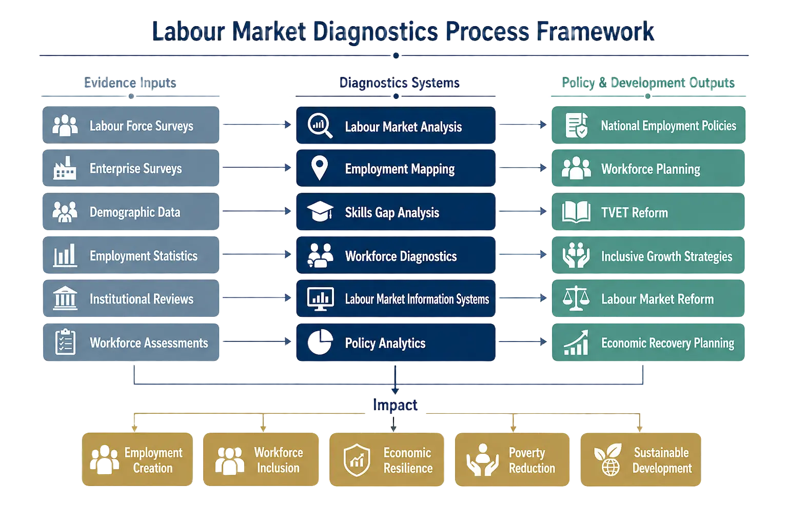

Labour market systems are the institutional, economic, and social structures through which workers, employers, governments, training institutions, and market actors interact to shape employment outcomes within an economy. They do not function merely as mechanisms for matching workers with jobs. Rather, labour market systems operate as interconnected governance ecosystems that influence productivity, livelihoods, social stability, skills development, enterprise growth, and inclusive economic transformation.
In both advanced and developing economies, labour market systems sit at the intersection of economic policy, workforce development, industrial strategy, education systems, demographic change, and social protection. Their effectiveness often determines whether economic growth translates into productive employment, whether labour transitions remain manageable during crises, and whether workforce participation contributes to long-term development resilience.
Institutions such as the International Labour Organization (ILO), the World Bank, OECD, African Development Bank, and UNDP increasingly approach labour markets through systems-based frameworks that connect employment generation with governance capacity, institutional coordination, labour-market intelligence, and evidence-based policy implementation. This broader understanding reflects the reality that employment outcomes are rarely produced by labour policy alone. They emerge from the interaction between macroeconomic structures, enterprise ecosystems, skills systems, infrastructure, investment patterns, demographic trends, and institutional capability.
Labour market systems influence how economies absorb labour, allocate skills, manage transitions, and respond to structural change. They help governments understand where jobs are being created, which sectors are declining, where skills shortages exist, and how workforce participation affects economic performance.
Well-functioning labour market systems support:
They also provide governments with the institutional capacity to respond to labour-market disruptions arising from economic crises, technological change, climate transitions, migration pressures, or demographic shifts.
In many developing economies, labour market systems additionally play a stabilizing governance role. They help coordinate employment interventions across ministries, training institutions, employers’ organizations, labour unions, development partners, and subnational governments. This coordination becomes especially important where labour markets are fragmented by informality, regional inequality, weak industrial diversification, or demographic pressure.
Recent employment-policy reforms in countries such as Nigeria, Ghana, Rwanda, and South Africa increasingly demonstrate that labour governance is no longer treated as a standalone social-sector concern. It is now understood as a central pillar of economic planning, inclusive growth, and development governance.
Labour market diagnostics are structured analytical processes used to assess the performance, characteristics, and constraints of labour-market systems. They generate evidence for policymaking by examining how labour demand, labour supply, institutional arrangements, enterprise dynamics, workforce skills, and economic structures interact within a particular context.
Diagnostics typically examine:
They also assess institutional effectiveness, including the functionality of Labour Market Information Systems (LMIS), public employment services, TVET systems, labour inspection structures, and social dialogue mechanisms.
Importantly, labour market diagnostics are not purely statistical exercises. They are governance tools. Their purpose is to help institutions understand why labour markets produce certain outcomes and which structural barriers prevent employment-intensive growth.
In fragile or transition economies, labour-market diagnostics often support broader recovery and resilience frameworks by identifying sectors with employment-generation potential, vulnerable workforce groups, and institutional bottlenecks affecting labour absorption and livelihoods recovery.
Related research on labour market diagnostics and institutional coordination systems in Nigeria has similarly highlighted the importance of linking workforce analysis with institutional implementation capacity and inter-agency coordination mechanisms.
.webp)
Labour market diagnostics combine quantitative analysis with qualitative institutional assessment.
Quantitative approaches typically include:
These methods help institutions identify trends in labour participation, workforce distribution, job creation patterns, migration flows, sectoral employment concentration, and skills demand.

Qualitative methods are equally important because labour-market outcomes are often shaped by institutional and governance realities that statistics alone cannot capture. These include:
In practice, multilateral institutions frequently combine both approaches to build comprehensive labour-market assessments. This allows policymakers to understand not only where employment challenges exist, but also why implementation gaps persist across governance systems.
Institutional diagnostics increasingly evaluate:
Employment mapping refers to the systematic identification and analysis of how employment opportunities, workforce distribution, skills ecosystems, and enterprise activities are spatially and sectorally organized within an economy.
Employment mapping helps institutions understand:
It is particularly useful for identifying:
Employment mapping is increasingly used within National Employment Policies, local economic development frameworks, and regional resilience programmes. It supports evidence-based planning by linking workforce analysis to infrastructure planning, industrial policy, enterprise development, and subnational governance systems.
Applied institutional studies on employment coordination and workforce systems in Nigeria have further demonstrated how employment mapping can strengthen alignment between employment interventions, local economic priorities, and labour-market governance structures.

Employment policy depends heavily on the effectiveness of labour market systems because policy implementation requires functioning institutional coordination mechanisms, labour-market intelligence, and workforce governance capacity.
Labour market systems support employment policy by:
Modern National Employment Policies increasingly operate through integrated governance frameworks involving ministries of labour, finance, education, trade, youth development, planning commissions, employers’ organizations, labour unions, and development partners.
For example, Nigeria’s revised National Employment Policy framework emphasizes Labour Market Information Systems, institutional coordination structures, TVET alignment, Active Labour Market Policies (ALMPs), monitoring and evaluation systems, and decentralized employment governance mechanisms.
This reflects a broader international shift toward evidence-based employment governance, where labour systems are treated as cross-sector development systems rather than isolated labour-administration functions.
Labour market data helps governments anticipate workforce transitions, identify growth sectors, forecast labour demand, and manage economic transformation.
Reliable labour-market intelligence enables policymakers to:
During economic shocks, labour-market data becomes essential for designing recovery strategies, social-protection interventions, and employment-intensive investment programmes.
Increasingly, governments are integrating labour-market data into:
The expansion of Labour Market Information Systems (LMIS), labour observatories, and employment-monitoring platforms reflects growing recognition that workforce intelligence is central to economic governance.
Institutions measure labour-market performance through a combination of economic, social, and institutional indicators.
Common indicators include:
However, contemporary labour-market evaluation increasingly extends beyond headline unemployment statistics.
Institutions now assess:
This reflects growing awareness that labour-market performance must be evaluated in terms of decent work outcomes, inclusion, resilience, and sustainability rather than employment quantity alone.
Labour markets in many developing economies face structural constraints that limit productive employment generation and workforce inclusion.
These challenges often include:
Rapid demographic growth further intensifies pressure on labour-market systems, especially where economic transformation fails to generate employment-intensive growth.
In many contexts, educational systems also remain poorly aligned with labour-market demand. This contributes to persistent employability gaps despite rising educational attainment.
Analysis of inclusive growth and workforce systems in resource-dependent African economies has similarly emphasized how structural constraints, weak productive sectors, and governance fragmentation can limit the translation of economic growth into broad-based employment opportunities.
Labour market systems support workforce development by aligning skills formation with labour demand.
This includes coordination between:
Effective workforce systems help economies prepare workers for labour-market transitions while improving enterprise productivity and employability outcomes.
Increasingly, workforce development frameworks incorporate:
In several countries, apprenticeship reforms, employability systems, and public employment services are now being integrated into broader employment governance frameworks to improve school-to-work transitions and reduce structural unemployment.
Evidence-based labour market governance refers to the use of data, diagnostics, monitoring systems, institutional coordination, and policy evaluation mechanisms to guide employment-related decision-making.
It reflects a shift away from fragmented employment interventions toward integrated governance systems grounded in measurable labour-market evidence.
This approach typically involves:
Evidence-based governance also strengthens accountability because institutions can assess whether employment programmes are producing measurable labour-market outcomes.
Within contemporary development governance, labour-market systems increasingly function as strategic infrastructure for inclusive growth, resilience planning, crisis recovery, and long-term economic transformation. Their effectiveness depends not only on policy design, but also on institutional capability, governance coherence, implementation coordination, and the ability to continuously generate and apply labour-market evidence in rapidly changing economic environments.

Employment Policy & Labour Markets
International Labour Organization (ILO)
Employment Policy
International Labour Organization (ILO) & Federal Ministry of Labour and Employment, Nigeria
Employment Policy & Labour Markets
International Labour Organization (ILO)